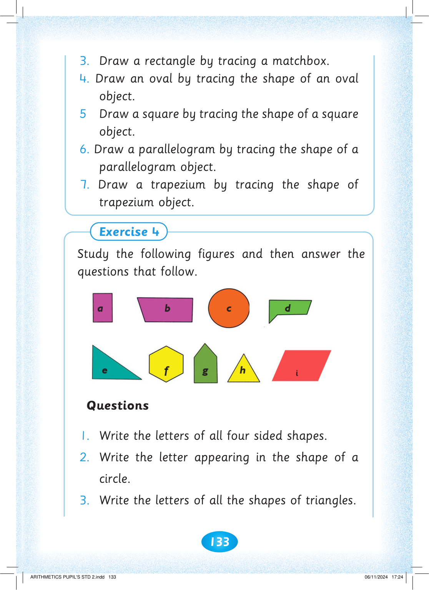
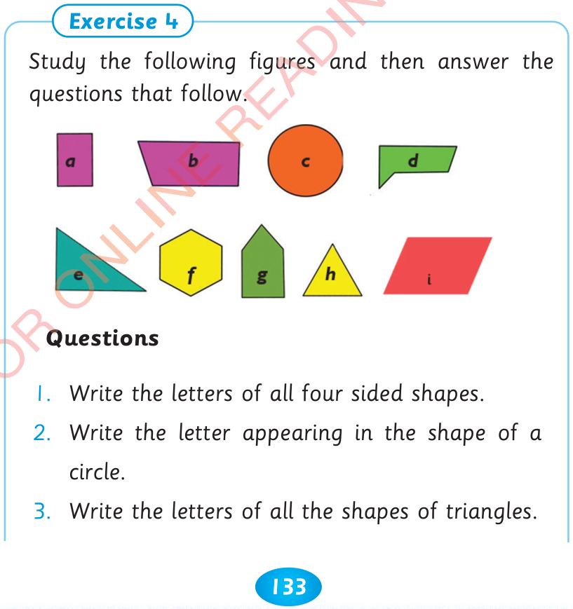

133



3. Draw a rectangle by tracing a matchbox.


4. Draw an oval by tracing the shape of an oval object.
5 Draw a square by tracing the shape of a square object.
6. Draw a parallelogram by tracing the shape of a parallelogram object.
7. Draw a trapezium by tracing the shape of trapezium object.
Exercise 4
Study the following figures and then answer the questions that follow.
Questions
1. Write the letters of all four sided shapes.
2. Write the letter appearing in the shape of a circle.
3. Write the letters of all the shapes of triangles.


ARITHMETICS PUPIL'S STD 2.indd 133
06/11/2024 17:24